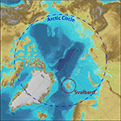

Friday Philosophical Musing:
Parmenides’ Block Universe
In the 5th century BC, the philosopher Parmenides proposed that that all change was an illusion, that in reality everything was fixed: a single, solid block. Now on the face of it, this sounds totally preposterous, contradicting everything that we see and know. However, as crazy as it sounds, modern physics is beginning to point toward this philosophy.
Based on our current understanding, when Einstein’s Theory of Relativity is extrapolated out to its fullest, it necessitates the multidimensional universe that we discussed last week, a universe where time is merely another dimension, just as solid and tangible in higher dimensions as height and width are in our familiar three dimensions. If this is the case, then from the perspective of the higher dimensions our reality is a solid, unchanging, incredibly detailed block. Our past, present, and future are all simultaneously in existence when viewed from the higher perspectives, just as the top, middle, and bottom of a three dimensional object are simultaneously in existence from our perspective. Our perception is just moving through time toward a future that already exists.
Now here is where it gets sticky: If this is true, then what about free will and self-directed choice? If Parmenides and Einstein are correct, it would appear that we are just coasting along on a predetermined path with no say in how we live our lives. However, it is actually possible to have both a set future and a free will; it just all depends on your point of view. The best way to think of this is to think of a book.
A book is a solid fixed object, with a preset beginning, ending, and complex plot in the middle. Each part of the story exists simultaneously as the book sits on the shelf, and we can open the book to any page to see what is happening in the story at any time, in any order. Now, even though the entire story already exists from our perspective, we still recognize that from the characters’ perspective, the story’s time is very real, and that the characters have no knowledge of future events in their world. The characters are still making choices as their story unfolds; the fact that we know how the story is going to end in no way influences the characters’ free will or the choices they make in their world. We get a glimpse of this when we get totally immersed in a story (essentially putting ourselves in the characters’ dimension): When immersed, we never think that the characters are compelled by an outside force to think or act in a certain way, rather we live their story with them, sometimes even feeling suspense in spite of the fact that we already know how the story ends.
This is our existence. We are each characters in the story of our universe, whether that story has been authored by a higher being or come together through the laws of physics is another question entirely. We are but specks within the confines of our universe, and our universe is just one book in the vast library of the next dimension, and for all we know, that dimension is just one book in the library of yet a higher dimension.
Will we ever be able to fully comprehend this? Will we ever be able to transcend this universe and experience a higher dimension? I don’t know, but I do know that the full extent of reality is utterly awe-inspiring.
February 1


The dropping of the atomic bombs on Hiroshima and Nagasaki may have been the result of the worst translation mistake in history. To understand why, we need to cover a bit of pre-WWII Japanese culture:
Japan’s military had a proud history. Until WWII, no foreign power had ever successfully invaded Japan for its entire 1,500 year history. This led to an arrogant spirit in their military ranks: defeat was not an option; suicide was preferred over surrender. Furthermore, for most of Japan’s history, the government was controlled by the military, and the emperor was merely a puppet ruler. It was only in the mid 1800’s that power began to shift back to the imperial courts. This was a slow process, and by WWII the Japanese government still had to act tactfully in its dealings with the military.
When the Potsdam Ultimatum was made, giving Japan the option of surrender or destruction, this would not have been an easy decision for the Japanese government. The US had gained the upper hand in the Pacific, so the threat was viable, but surrender would not be an option for most of Japan’s military, and a civil war was highly likely if the Japanese government accepted the USA’s terms. Japan’s official response to the States was silence, and their response to the Japanese people was that Japan was treating the ultimatum with mokusatsu, and reminding them that the only alternative to surrender was to continue fighting.
This is where things get sketchy. Mokusatsu is a rather ambiguous word: to treat something with mokusatsu could either mean that you were ignoring it or that you felt contempt for it. While it is certainly possible that the Japanese government was legitimately ignoring the ultimatum, it is possible that they were publicly expressing their contempt for the order while quietly trying to convince their military that surrender was their best option (Japan asserts that this was the case). If the latter was correct it would make sense that the government would choose a word that the military and general public could choose translate as statement of defiance, while still leaving a backdoor for them to surrender gracefully. (i.e. Something like: “Oh no, we never meant that we were ignoring it. The situation certainly breeds contempt, but we knew all along that we had no choice but to surrender.”)
Whatever was going on behind closed doors in Japan’s government, the Japanese media translated the statement with a nationalistic spin in their international English newspaper, claiming that Japan was ignoring the ultimatum and that they would continue fighting. When the US received no official response from Japan, they looked to the Japanese this media to gauge the atmosphere of the nation. The staunch claims of the newspaper were unintentionally made even more militant when US took “ignore” to mean “reject.”
We’ll likely never know for sure what truly happened, and there are valid arguments both for and against the necessity of the bombings. But if history shows us anything, it’s that nothing is ever as simple as it seems on the surface.
January 31

Cellphone touchscreens work by sending a tiny current of electricity through your fingertip and measuring where on the screen the electricity returns. This is why it is difficult to use a touchscreen if your fingers are very dry: Skin requires moisture to effectively conduct electricity.
January 30


While sitting the trenches during WWI, J.R.R. Tolkien actually invented a complete language for the Elves in The Lord of the Rings and The Hobbit, but he never got around to writing it all down. Now all that fans have to go by are fragments of the language gleaned from Elvish phrases and poems in the books themselves.
The language itself has Welsh and Norse influence, while inspiration for the written characters was draw from Sanskrit and Arabic. Furthermore, much of the Elvish lore has its roots in Norse and Celtic mythology.
January 29


The chivalric order of the Knights Templar is credited with creating the first modern banking system. The order was established during the time of the Crusades, and its primary purpose was to provide protection for Christian pilgrims traveling to the Holy Land. However, as they set up posts along the routes from Europe to Jerusalem an important secondary purpose developed.
All Templars swore an oath of poverty before being initiated into the order, so as European nobles acquired wealth in the Holy Land, they would frequently leave it under the Templars protection. (The same concept as having eunuchs oversee a harem). This eventually led to the Templars being in direct control of vast fortunes that they did not own themselves, fortunes that they would release it to their rightful owners on request.
The system grew in complexity as the problem of highway robbery increased. Nobles traveling to and from the Holy Land were prime targets for thieves, since the nobles would typically be traveling with large sums of money, either returning home with their conquests or setting forth with their capital. The Templars solved this problem by creating the precursor to wire transfers:
Before leaving for a journey a noble would deposit a large sum at the local Templar post in exchange for a personalized claim receipt. Once they arrived at their destination, they would visit a Templar post there and exchange their receipt for funds from the local vault.
Friday Philosophical Musing:
Eternalism
We are three dimensional beings that progress through a fourth dimension, time. The people we were ten years ago and the people we will be ten years from now are just as much us as the people that we are now, but we are only able to be aware of ourselves (and the rest of reality) in the part of time that we call the present.
Now let’s go a step down and imagine a two dimensional universe where there is no tangible concept of height. The beings in this realm exist in width and depth and move through height like we move through time. As an example, imagine a tiny disk in this realm that steadily grows larger during its “life” until it reaches five inches across and then disappears. From our three dimensional perspective we would see this being as a cone. We could see and interact with any part of the cone; we could even touch multiple parts of the cone simultaneously, but as we changed the location of our fingers it would appear to the two dimensional being that we were interacting at different “times.” For instance, we could have a finger at the top and bottom of the cone at the same time, but to the two dimensional being it would appear that we were there at the beginning, then we would disappear as their perception moved through the gap between our fingers, then as their “time” passed and they reached the top, we would suddenly appear again.
If we could communicate with this world, it would be difficult to convey to them the concept of tangible height and likely impossible to make them understand time as we know it; even if they could grasp the concept, they would probably never fully understand it. Furthermore, we would probably state things that made no sense to them (Try explaining that the spiral running through their two dimensional universe was actually a single, connected shape rather than a series of disconnected ovals). And to top it all off, we could tell them about their “future,” the heights that they had not yet perceived. In short, we would appear godlike to this realm.
Now imagine that we were able to ascend to a four dimensional realm where the concept of time was just as tangible as height, width, and depth. We could look down on three dimensional beings and see every detail of their lives at a glance while our lives moved through some unknown fifth dimension. We could exist entirely outside of the three dimensional reality, but still reach down and interact with it, though they would only be able to see a facet of our entirety.
If a being could exist at that level, they would appear to be godlike to our three dimensional minds. If any of the deities described in world religions exist, perhaps they are simply fourth dimensional beings.
January 25

Apologize is an incredibly misused word based on its original meaning. Until about 1725 apologize meant “To make a defense”. If someone were caught doing something wrong or even if there was a simple disagreement of opinions, the offending party would be asked to apologize: to explain the reasoning behind their actions or their beliefs. It had nothing to do with expressing guilt or remorse. (Apologetics is the only modern word I know of that preserves the original meaning of apology.)
So it is the ultimate oxymoron when a parent tells their child, “Stop making excuses and apologize!”
January 24


Viggo Mortensen had to give his all for his role of Aragorn in The Lord of the Rings. He was injured (or nearly injured) at least three times during the filming of the movies. In every case, Peter Jackson chose to use the antagonistic takes for the production cuts since Mortensen’s reactions were (obviously) more authentic.
The first two incidents can be seen during the Uruk-Hai ambush at the end of The Fellowship of the Ring. At some point in the battle, Aragorn gets hit in face. Mortensen actually had a tooth knocked out during the filming of this scene.
Later in the battle, an Uruk-Hai throws a knife at Aragorn, which he deflects with his sword. In real life, that was a real knife being thrown by a professional knife thrower. The knife was supposed to be thrown beside Mortensen so that he was never in danger during the shoot, but the knife thrower’s heavy makeup and prosthetics caused him to misjudge his throw, and the knife was throw directly at Mortensen!
The third incident occurs in The Two Towers. In the movie Aragorn finds Pippin’s cloak clasp in a pile of partially cremated Uruk-Hai. Aragorn assumes that the hobbit is dead, and in his frustration kicks a helmet and lets out a heartfelt scream of agony. In real life, Mortensen was actually screaming in agony. No one told the props guy that Aragorn was supposed to kick the helmet, so the prop helmet that Mortenson sends flying through the air was made of solid steel. That cry of agony was due to Mortensen breaking his toe on helmet.
January 23


The Catholic church actually banned crossbow use shortly after they were invented. The reason: They made it too easy for people to kill one another. Unlike other weapons of the time – which took months or years of training before someone could use them effectively – the point-and-shoot approach of the crossbow allowed an untrained rabble to become a deadly supporting force in battles, particularly in siege defense.
Of course this ban did not last long. Most nobles ignored the ban, preferring a tangible edge in battle to escaping potential consequences in the afterlife; and those who adhered to the ban began consistently loosing battles. Eventually the Church realized that, like-it-or-not, the only way the armies of the faithful would have a chance to survive in the age of the crossbow was to adopt its use themselves.
January 22

Pneumonoultramicroscopicsilicovolcanoconiosis (Pneumono-ultra-microscopic-silico-volcano-coniosis) is the longest word found in English dictionaries. It refers to a lung disease caused by inhalation of fine particles of volcanic silica dust.
Friday Philosophical Musing:
Socratic debate
Many times after an argument, neither side changes their stance and each side wonders how the other could be so stupid.
This occurs because we can see the reasoning behind our stance, so we assume that the other person is being illogical.
However, an error in logic is only one reason why people disagree. Many times both sides have a completely valid, logical argument. The only reason that they disagree is because their starting assumptions are different.
These assumptions can be so foundational to each person that they cannot image anyone not having the same assumptions. That is where the misunderstanding truly takes place.
Most arguments take place over conclusions at the top of each person’s thought tree. Conclusions that make perfect sense assuming that the person’s starting assumptions are true. To successfully resolve an argument while minimizing conflict, it is important to try to dig down to the roots of someone’s stance early on in the disagreement. Keep going down their belief tree until you arrive at a place where you both have the same starting assumptions. Unless you are both starting with the same assumptions any discussion will be pointless.
Once you identify a common ground for each sides’ stance, that is typically the general area where the discussion’s topic should stay.
If you can convince someone to change a branch assumption that disagrees with yours by pointing out an error in their reasoning or providing information that they had not considered, all of the “leaves” at the top of their tree that were connected to that branch will follow.
However, If the root of someone’s stance is a life-assumption (a root assumption) that disagrees with one of yours, then they are not likely to change their view, and further discussion will likely be unfruitful. (Since you cannot come to a place where you have the same starting assumptions.) In these situations, you simply have to agree to disagree.
The benefit to this approach, even if the discussion ends in disagreement, is that both sides have worked to understand where the other is coming from. So even if they disagree at a root level, they can at least respect the thought process behind the other stance.
Now obviously if two starting assumptions are contradictory they cannot both be true. Only one (or neither) person is actually correct. But from a purely rational standpoint there is no way to say which is right or wrong, all you can do is point out contradictions.
January 18


If you visited the rural American Midwest anytime in the early 2000s, you probably saw ladybugs, lots and lots of ladybugs. Whether you were eating out on your patio, moving the lawn, or reading a book on your living room sofa it was not surprising to have a ladybug in your field of vision. And that was in summer.
Ladybugs overwinter in huddles in warm locations. In other words, mounds of red and black in people’s homes. Businesses with fluorescent lights would have to regularly clean the covers of dead beetles because they would begin to look like macabre mosaics. Little clusters of lady bugs would gather in the corners of ceilings and kitchen cupboards. Sometimes a lone explorer would leave its group to find another, running into people during its groggy, semi-hibernatic flight. To someone not used to the phenomenon it could feel like a cute, little, red-and-black version of Hitchcock’s “The Birds.”
Fortunately, this only lasted for a few years. The cause: Ecology.
Ladybugs are used by farmers for pest control. Normally, birds eat the ladybugs to help keep the population in check. Around year 2000, several farmers imported a bunch of Asian Ladybird Beetles (a lady bug subspecies) to deal with pests. These new lady bugs tasted different than the native lady bugs, so the birds wouldn’t eat them. With no predators, it didn’t take long for the population to explode.
Eventually the birds acquired a taste for the imports and the population leveled, but the residents of the American Midwest still remember the time when the ladybugs invaded.
January 17
The brown recluse is rarely seen. As its name suggests, it is quite reclusive. Furthermore, it does not settle down in a web like most spiders, but always on the move hunting for prey. It is a rather unassuming little spider. Though it can sometimes have a violin-shaped pattern on its back, many times it is just a plain, brown spider, about the size of a quarter. Just like the black widow, brown recluses only bite when they feel threatened, again, typically when people reach into dark crevices. (e.g. Feeling around for the coin that rolled under the water heater in the basement)
Brown recluse bites do not directly cause death. Their venom is a hemotoxin: It directly kills tissue in the area around the bite site. The liver can neutralize this toxin as well, but it is a longer process since the venom tends to stay near the bite site. Usually, noticeable tissue damage occurs before it can be completely neutralized. Most of the time this is simply a deep sore that heals, but in rare cases the damage can be quite extensive. (Look it up if you have a strong stomach.) This is when deaths can occur, not from the bite itself, but from infection of the wound. To make matters worse. There is no antivenin for brown recluse bites. Going to the doctor is still important to make sure the bite is dressed appropriately to reduce the risk of infection.
So moral of the story: brown recluses are rather uncommon, so you don’t have to be afraid of every brown spider you see (There is vast number of small brown spiders, most perfectly harmless), but if you do see a small brown spider that’s not in a web, don’t take any chances and kill it if you are able.
January 16
Only the adult female black widow is dangerous. The fangs of the males and spiderlings are too weak to puncture human skin. Additionally, black widows are very shy, typically only biting to defend their young. The danger occurs because they tend to make their webs in dark crevices where they can’t be seen, then an unsuspecting person reaches into the crevice and the spider perceives them as a threat. (e.g. Reaching under some planks in an abandoned woodpile.)
There are three subspecies of black widows in the US, and the vast majority of all deaths are attributed to the Southern Black Widow, which does not live around here. We have the Northern Black Widow, the least venomous of the three.
Black widow venom is a neurotoxin that prevents nerves from firing, but it can be neutralized by the liver, so while most people get sick (sometimes requiring hospitalization) from a black widow bite, death typically only occurs in people with poor immune systems. When death does occur, it is usually from suffocation due to the diaphragm being paralyzed.
Fortunately, there is antivenin available for black widow bites, so if you get bit, be sure to get to a doctor right away. Don’t catch the spider if there is any possibility that it is still alive – you don’t want to risk getting bit again (Only crazy people like me do that.) If you have a black widow problem in your home, call an exterminator and specify that you want them to spray for black widows, not just spiders. Black widows are resistant to many spider sprays.
Friday Philosophical Musing:
Plato’s Forms
If you think about it, we each live in a reality of our own making. The only way we have to perceive true reality is through our senses, senses which are very limited in what they can perceive. We can only be aware of a sliver of what really exists around us.
Furthermore, all of our conclusions about what we perceive in the present are based upon memories of the past, memories that are incomplete and biased toward what was most significant to us and our personal root beliefs.
Therefore, each person’s entire perception of existence is something that they have individually constructed based on limited input and biased memories. We can each perceive only a facet or form of true reality. It is no wonder there are so many disagreements: on some level every person truly is living in their own little world.
January 11
Germany conquered Svalbard during WWII, and the troops stationed there were the last Nazi troops to surrender. The Svalbardians fled as the Nazis advanced, so the stationed Nazi troops were the only ones on the islands during the war. At some point the Nazi’s radio transmitter malfunctioned, preventing any communication with the mainland, and Germany never bothered to send anyone to relieve them. The next contact the Svalbard Nazis had with the outside world was when they met a group of Norwegians moving back to Svalbard after the war was over.
January 10
Though there is certainly an argument for considering Svalbard a no-man’s-land. The territory has sophistication too. The archipelago has the lowest crime rate of any permanent settlement in the world, they have their own university, and the territory is also home of the Global Seed Vault: a giant warehouse that contains frozen seeds from thousands of different plants from around the world. The Vault exists so that we can both recommence food production in the case of a nuclear disaster or repopulate a species if it goes extinct in the wild.
January 9
Because Svalbard is north of the Arctic Circle, it experiences the Midnight Sun and Polar Night phenomena. During most of spring and summer the sun never sets in Svalbard, and during most of fall and winter it never rises. In fact, Svalbard only has normal day/night cycles for about a third of the year.
2/3 of the of the land in Svalbard is protected as national parks.
There are no roads connecting towns in Svalbard. People instead use helicopters, boats (for coastal towns), and snowmobiles to travel from town to town.
January 8

It’s the time of year where the days are short and things start getting really cold. So I thought it would be fitting to focus this week’s thoughts on a little known territory in the Arctic Ocean, the northernmost permanent settlement in the world. Ladies and gentlemen, I give you Svalbard.
Svalbard (Old Norse for “Cold Shores”) is technically claimed by Norway, but they elect their own government officials and have no connection to the Norwegian government. So they essentially function as a sovereign state with the protection of Norway. (Similar to US territories like Puerto Rico)
Though it is halfway between Norway and the North Pole, Svalbard is actually considerably warmer than one would expect. Average temperatures in the summer are in the low 40s and winter temperatures hover around the single digits, comparable to Nome, Alaska (which is twice as far away from the pole.). The warmer temperatures are due to Svalbard receiving the last throes of tropical water carried by the North Atlantic Current.